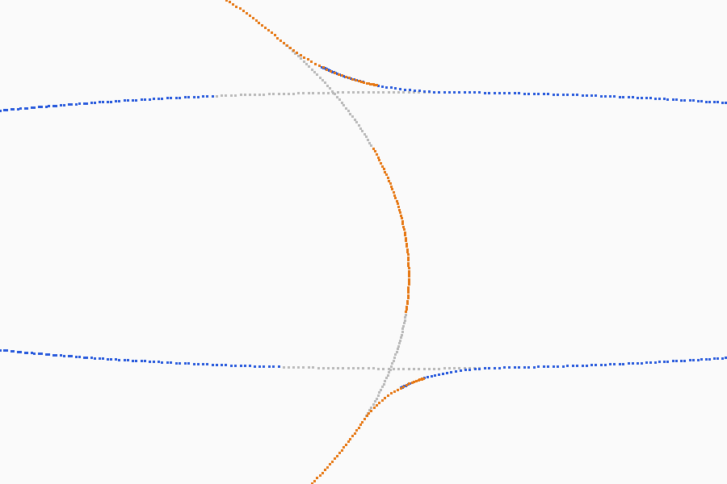

Three directions for the Live stack card's new row, each drawn on a desktop window and an iPad. Design: design.md. The viewport drawing is a sketch of an arm joined to a torso; the fillet is what the row draws.
Recommendation: A, with C's contact state (touching, near, apart) inside A's checklist so the list says where a fillet will form; B's picking mode only if a tablet run shows that names are not enough.
Spike picture (z = 0 slice; grey before, blue the arm and orange the torso after):
